📌 今日趋势：Meta 开始讨论按工程师限制 token 花费，AWS 给 Security Hub 加 AI inventory，GitHub 把 AI 安全检测塞进 PR，Reflection 拿下 10 亿美元算力合同，Hugging Face 的数据又把中国开源模型推到台前。今天的共同动作很直接：AI 能力正在从“谁最强”转向“谁能被看见、被计量、被控制、被便宜地跑起来”。
对中国创作者和创业团队来说，最该兴奋的不是某个新 benchmark，而是成本和入口正在重新洗牌。闭源旗舰仍然适合高价值任务，但批量工作会继续流向开源模型、本地部署、云安全盘点和可审计的 agent 工作流；谁还只会喊“用最强模型”，谁就在替供应商交学费。
接下来 2-4 周要盯三件事：大厂会不会正式推出 token spend 上限和预算仪表盘，云厂商的 AI asset inventory 会不会成为企业采购标配，以及开源模型开发商能不能把算力合同转成真实吞吐。账单一透明，很多 AI 产品的毛利神话会被当场验尸。
TechCrunch
Meta 要给工程师 token 花费封顶
来源: TechCrunch · 2026-07-15 · 原文链接
TechCrunch 7 月 14 日报道，Instagram 负责人 Adam Mosseri 在 Lenny's Podcast 中表示，未来一两年 Meta 可能需要限制员工的 AI token 花费。他提到强工程师的 AI burn rate 可能接近其薪资成本；报道还称 Meta 已关闭内部 AI token spend leaderboard，Uber 和 Microsoft 也在重新收紧 AI coding 成本。
Janet 锐评：
AI 编程的第一轮红利很快撞上财务部。员工觉得自己在提效，公司看到的是每个人背后多了一张隐形云账单；做内部工具的团队现在就该把成本、任务类型和产出绑在一起，不然预算会先替你做产品决策。
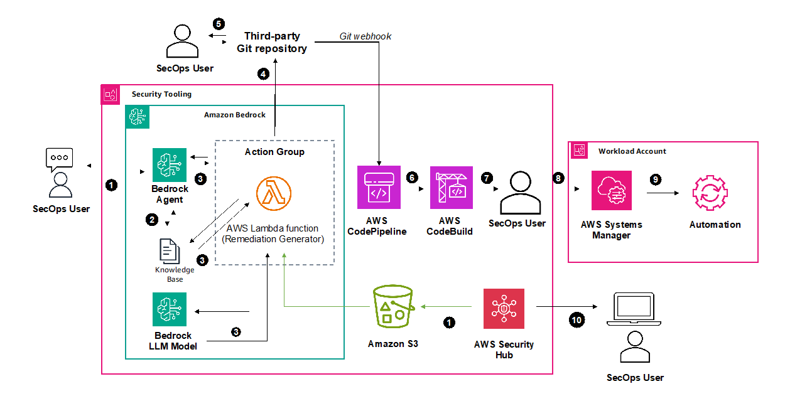
AWS
AWS 给 Security Hub 清点 AI 资产
来源: AWS · 2026-07-15 · 原文链接
AWS 7 月 14 日宣布 Security Hub 新增 AI inventory，面向安全团队提供组织级 AI 资产和安全态势视图。它会通过 AWS Config 盘点 Bedrock、Bedrock AgentCore 和 SageMaker，通过 Amazon Inspector 识别 EC2 与 ECR 中的 Ollama、vLLM、Hugging Face TGI 等自托管 AI 组件，并用 GuardDuty DNS telemetry 发现第三方模型 API 依赖。
Janet 锐评：
影子 AI 已经越过员工偷偷用 ChatGPT 的阶段，模型、agent、推理端点散落在云里没人知道。AWS 把盘点做进 Security Hub，说明企业买 AI 的下一关是先看清自己到底跑了什么。
Axios
DeepMind 呼吁美国牵头 AI 监管体
来源: Axios · 2026-07-15 · 原文链接
Axios 7 月 14 日报道，Google DeepMind CEO Demis Hassabis 呼吁美国牵头建立全球 AI 监管机构，形式类似 FINRA，由行业资助、专家参与，用于测试 frontier AI 模型并在风险过高时要求放慢发布。他警告网络、生物和核相关能力可能在未来 18 个月进入更危险阶段。
Janet 锐评：
最强模型公司开始主动要监管，听起来温和，本质是给高门槛玩家修护城河。安全当然重要，但测试、准入和发布节奏一旦制度化，小团队会先被材料、流程和责任成本压住；开源社区也会被推到聚光灯下。
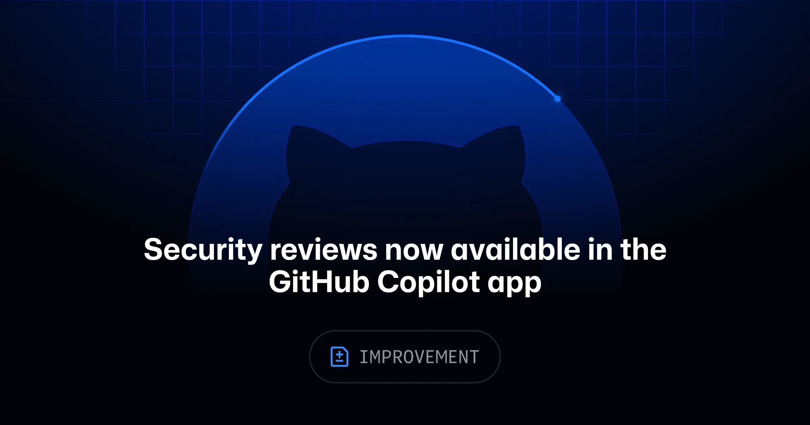
GitHub Changelog
GitHub Copilot 安全审查进 App
来源: GitHub Changelog · 2026-07-15 · 原文链接
GitHub 7 月 14 日宣布，Copilot app 公测 `/security-review` slash command，开发者可以直接对进行中的代码变更运行安全审查。该功能会返回高置信度安全发现、严重度和置信度评分，并给出可应用、可复核的修复建议，把原先 Copilot CLI 中的 AI-driven vulnerability scanning 带入日常编码窗口。
Janet 锐评：
代码助手终于从“帮你多写”走向“帮你少炸”。AI 生成代码越多，review 的瓶颈越贵；安全审查如果能卡在提交前，就比事后扫漏洞值钱。国内团队做 coding agent，别只卷补全速度，先把交付前的责任链补齐。
TechCrunch
Reflection 签 Nebius 10 亿美元算力单
来源: TechCrunch · 2026-07-15 · 原文链接
TechCrunch 7 月 14 日报道，美国开源模型公司 Reflection AI 与欧洲 AI 基建公司 Nebius 签署 10 亿美元 compute deal。Nebius 将提供 Nvidia 最新芯片，这距离 Reflection 与 SpaceX 签下类似算力协议只有数周，背景是闭源模型访问不确定性和中国开源模型崛起正在推高市场对 open-weight AI 的兴趣。
Janet 锐评：
开源模型公司也开始拼长期算力票，说明“便宜开源”背后同样是昂贵机房。不同的是，买家想要的是不被单一闭源平台断供的选择权；如果 Reflection 跑不出稳定吞吐，10 亿美元合同就会变成一张很重的信用卡账单。
Anthropic
Anthropic 免费开放 Claude 教师工作台
来源: Anthropic · 2026-07-15 · 原文链接
Anthropic 7 月 14 日推出 Claude for Teachers，为美国通过认证的 K-12 教师提供免费 premium Claude 能力、教学 skills 和 Learning Commons connector。Anthropic 称该产品包含 Claude Code 和 Cowork，可分析班级数据、生成分层材料、安排重复任务；教师数据不用于模型训练，并配套 FERPA 相关 K-12 数据处理条款。
Janet 锐评：
教育市场的入口在老师的备课和数据工作里，不在学生端的聊天框里。Anthropic 这步聪明：它卖的不是“AI 上课”，而是把教师最碎的时间切下来。国内教育工具别再只做题库壳，教师工作台才是高频入口。
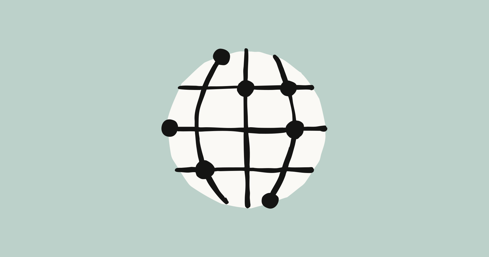
Anthropic
Anthropic 投 1000 万加元押加拿大
来源: Anthropic · 2026-07-15 · 原文链接
Anthropic 7 月 14 日宣布向加拿大研究机构投入 1000 万加元，支持下一代 AI research、safety 和 policy 工作，并发布基于 Anthropic Economic Index 的加拿大 country brief。其数据来自 2026 年 2 月 Claude.ai 的 100 万次对话抽样，显示加拿大占全球 Claude consumer use 的 2.6%，全球排名第八，按 AUI 指标排名第二。
Janet 锐评：
这笔钱不大，但方向很精：模型公司正在用研究资助绑定人才、政策和使用数据。加拿大在 Claude 使用里被高估配，Anthropic 就顺势把它做成样板市场；做全球化产品的人要学会看 usage index，而不是只看人口规模。
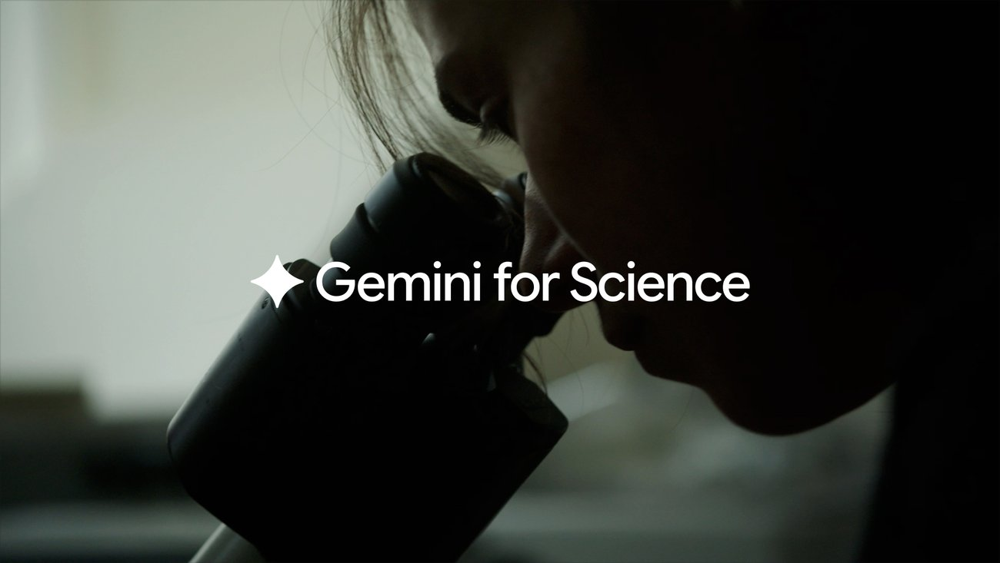
Google Blog
Google 推 Gemini 科学工具箱
来源: Google Blog · 2026-07-15 · 原文链接
Google 7 月 14 日介绍 Gemini for Science，一组面向科研的新工具和实验。Google Labs 的三个原型包括基于 Co-Scientist 的 Hypothesis Generation、基于 AlphaEvolve 和 ERA 的 Computational Discovery，以及基于 NotebookLM 的 Literature Insights，覆盖假设生成、代码实验扩展和文献结构化分析。
Janet 锐评：
科研 AI 的卖点不该是替科学家写摘要，而是把假设、实验和文献比较这三件慢活加速。Google 选这三个入口很现实：它们都能被引用、被复核、被写进流程。创作者做知识产品也一样，先解决证据链，别只做漂亮总结。
NVIDIA Technical Blog
NVIDIA 用 agent 后训 Cosmos 3
来源: NVIDIA Technical Blog · 2026-07-15 · 原文链接
NVIDIA Technical Blog 7 月 14 日发布 Cosmos 3 后训练案例，展示用 NVIDIA TAO agent skills、LoRA 和 AutoML 在不到一天内完成视频问答领域适配。其 AI-generated summary 称，Woven Traffic Safety 数据集上的准确率从 54.41% 提升到 93.35%，并可通过 Cosmos 3 Reasoner NIM 以 OpenAI-compatible endpoints 服务 LoRA adapters。
Janet 锐评：
视觉模型要进生产，靠通用能力硬扛很浪费，垂直后训才是正路。NVIDIA 把数据处理、baseline、LoRA 和部署打成 agent skills，本质是在卖一条缩短试错周期的生产线；工业视频和安防团队该认真看这个路径。
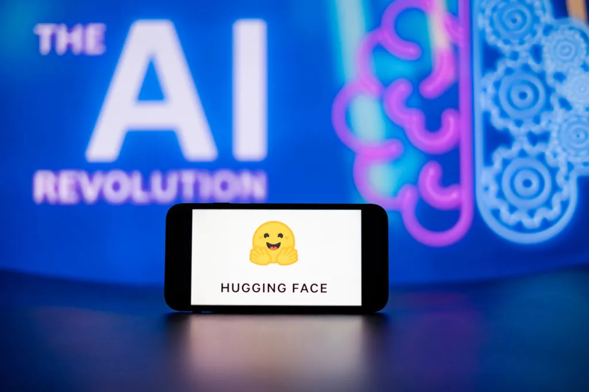
TechCrunch
Hugging Face 数据推开源模型上桌
来源: TechCrunch · 2026-07-15 · 原文链接
TechCrunch 7 月 14 日报道，Hugging Face CEO Clem Delangue 认为 AI 竞赛可能不再只发生在 frontier 层。文章援引数据称，中国 open-weight models 在今年春天占 Hugging Face 下载量 41%，超过美国模型；OpenRouter 排名前六的热门模型均来自中国公司，Vercel 数据也显示 open-weight models 在 6 月处理了近三分之一 AI requests。
Janet 锐评：
闭源旗舰负责制造神话，开源模型负责吃掉大量日常吞吐。41% 下载量已经不是面子数据，它说明开发者在用钱包投票。中国团队现在的机会是把便宜、可控、可微调做成真实交付优势。
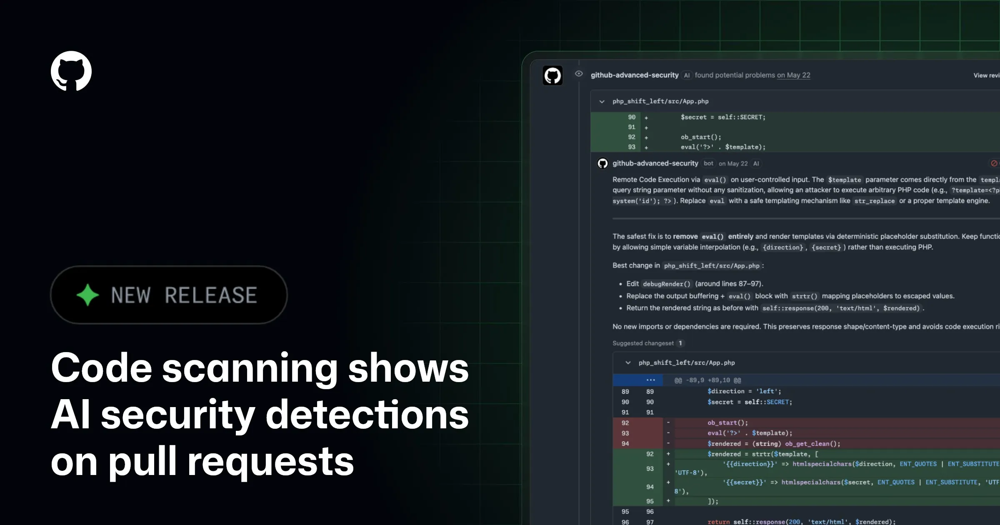
GitHub Changelog
GitHub AI 扫描直接标进 PR
来源: GitHub Changelog · 2026-07-15 · 原文链接
GitHub 7 月 14 日宣布 code scanning 将 AI-powered security detections 直接显示在 pull requests 中，覆盖 CodeQL 目前不支持的语言和框架。该功能处于 public preview，面向启用 GitHub Code Security 和 CodeQL default setup 的客户，AI alerts 会被标记为 AI，并消耗组织的 AI credits。
Janet 锐评：
AI 安全检测开始进入 merge 前流程，这是代码供应链的一个小拐点。它不会替代 CodeQL，但会覆盖更多灰区；对团队来说，最有价值的是把风险暴露在 PR 里，而不是上线后再做事故复盘。
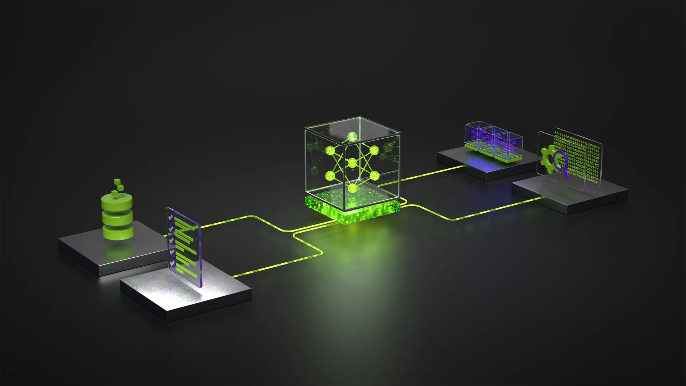
NVIDIA Technical Blog
NVIDIA 复盘 5000 人推理挑战
来源: NVIDIA Technical Blog · 2026-07-15 · 原文链接
NVIDIA Technical Blog 7 月 14 日复盘 Nemotron Model Reasoning Challenge。该 Kaggle 挑战吸引超过 5000 名参与者、4000 支队伍、数千次提交和 1000 多条讨论；参赛者在相同 open model、benchmark、基础设施和评估约束下，通过 LoRA adapters、synthetic chain-of-thought datasets、难题类型 solver 和验证策略提升推理效果。
Janet 锐评：
推理能力不是玄学，是一整套工程卫生。最强选手没有祈祷模型突然开窍，而是清洗训练轨迹、压缩推理长度、针对难题建 solver。做模型应用的人少看榜单多看方法，很多收益来自脏活。
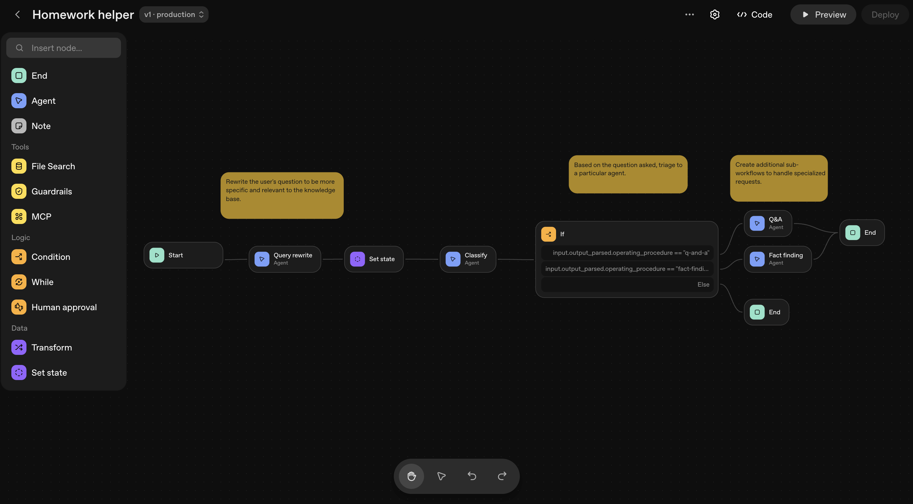
OpenAI
OpenAI 教企业按 ROI 管 agent 账单
来源: OpenAI · 2026-07-15 · 原文链接
OpenAI 7 月 14 日发布《How to manage AI investments in the agentic era》，提出用五个步骤管理 AI 投入：看清 usage 和 spend、按 outcome ROI 评估模型效率、在 advanced workflows 扩大前治理、资助可复利的工作流，以及按已验证需求匹配容量。文中称 GPT-4 到 GPT-5.4 每百万 token 价格下降 97%，但 token price 不能单独代表价值。
Janet 锐评：
OpenAI 也承认单看 token 单价没用，关键是每美元换来多少完成任务。对老板来说，这比模型发布更重要：没有 usage visibility 和 outcome 口径，agent 越会干活，预算越像黑洞。
今日核心预测
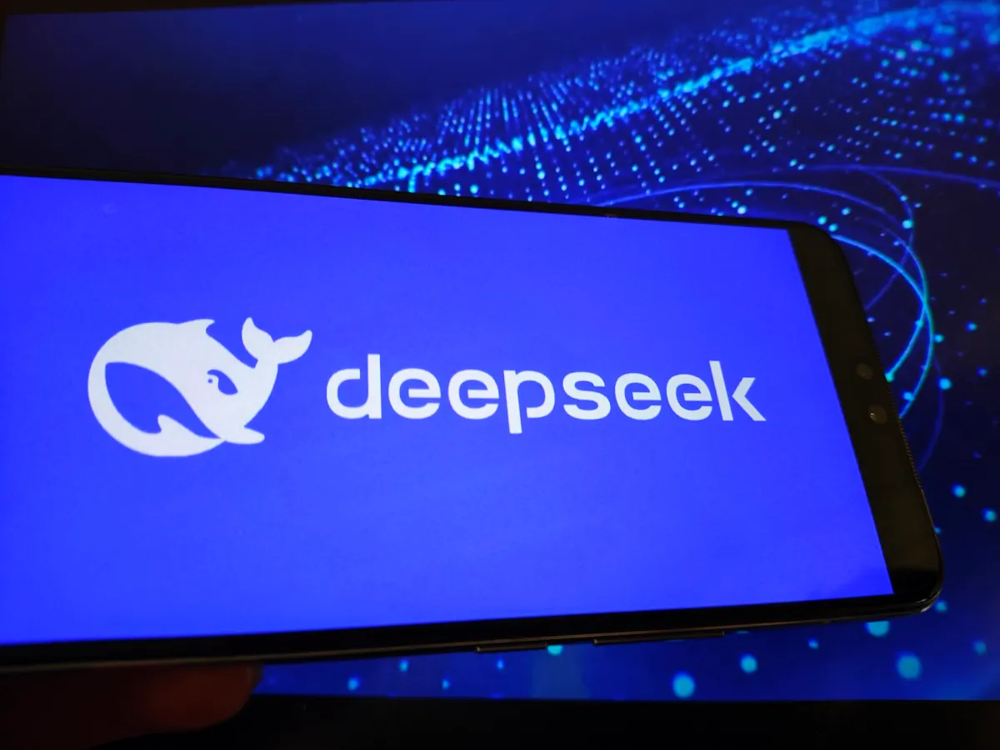
TechCrunch
DeepSeek 拟融 15 亿美元冲 IPO
来源: TechCrunch · 2026-07-15 · 原文链接
TechCrunch 7 月 14 日援引 Bloomberg 报道称，中国大模型公司 DeepSeek 正准备 2027 年 IPO，时间可能提前到今年底，同时寻求以约 710 亿美元估值融资约 15 亿美元。报道还提到，DeepSeek 上个月刚以约 500 亿美元估值完成 70 亿美元融资，这是其首次外部融资。
Janet 锐评：
DeepSeek 的估值跳得很猛，资本买的是中国开源模型的全球分发权和成本叙事。问题也尖锐：融资速度越快，商业化证明压力越大；如果收入跟不上估值，开源光环会很快变成审问灯。
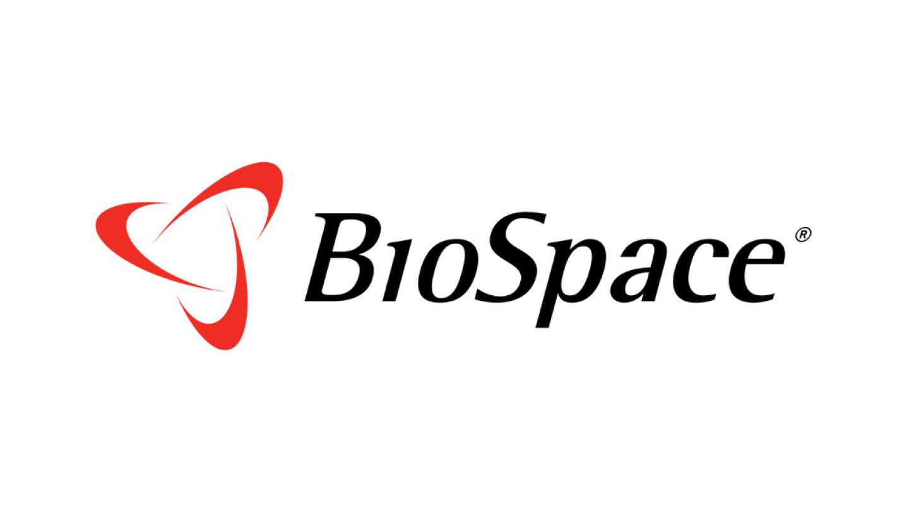
BioSpace
Chai Discovery 融 4 亿美元做 AI 制药
来源: BioSpace · 2026-07-15 · 原文链接
Chai Discovery 7 月 14 日宣布完成 4 亿美元 Series C，由 Index Ventures 领投，Kleiner Perkins、Sequoia Capital、Dimension 和既有投资方参与，公司估值达到 38 亿美元。公司称其 AI models 可从零生成新分子设计，合作方包括 Eli Lilly 和 Pfizer；最新 Chai-3 模型提升了目标成功率和 binding affinity。
Janet 锐评：
AI 制药终于从论文故事变成大额融资表。Chai 贵在它有药企客户和实验成功率叙事，不只是会画分子图；但生物世界不会因为模型漂亮就放水，后面要看湿实验、合作管线和付款节奏。
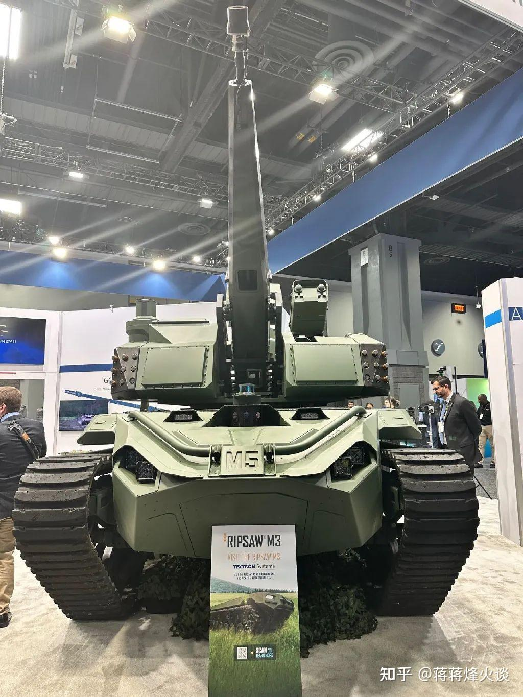
Axios
Singularity 拿 8000 万美元做防空
来源: Axios · 2026-07-15 · 原文链接
Axios 7 月 14 日报道，防空创业公司 Singularity 走出 stealth，完成 8000 万美元 Series A，估值 4 亿美元，Khosla Ventures 和 Felicis 领投。公司由 Jack Oswald 和 Shail Giroux 创立，目标是做更低成本的现代防空系统，团队超过 65 人，成员来自 Anduril、Lockheed Martin、SpaceX、Tesla 和 Toyota，并有美国和乌克兰前国防官员担任顾问。
Janet 锐评：
防务 AI 正在吃掉一部分最硬的钱。便宜无人机和导弹把拦截成本打穿后，投资人会追逐更低成本的防空技术；这条赛道不适合讲 demo，能不能进真实战场才决定估值是不是泡沫。